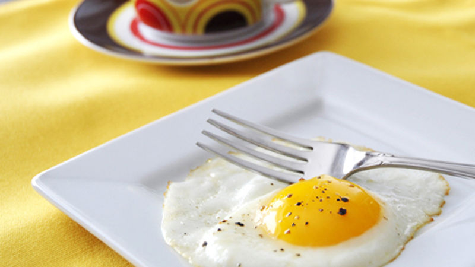

Omelette

Making the omelette is a very simple recipe, not much cooking skill or experience required! The Omelette is a delicious meal which should be part of your breakfast and other meals if it isn't already! The following tutorial will teach you how to make an omelette with the ingredients and instructions. Enjoy!
Ingredients
- 2 Eggs
- 1 tablespoon Butter
- 1 teaspoon Salt (Optional)
- 1 teaspoon Pepper (Optional)
Steps
- Place your pan on the stove
- Turn the heat on the stove to medium-high
- Place a tablespoon of butter onto the pan
- Move the butter along the pan to make sure its getting to all the areas of the pan
- Crack open your first egg into the pan
- Crack open your second egg into the pan
- Sprinkle in your teaspoons of Salt and Pepper (Optional)
- Wait for the omelette to be entirely a solid object (no liquidy)